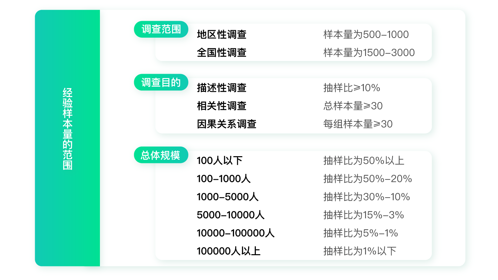
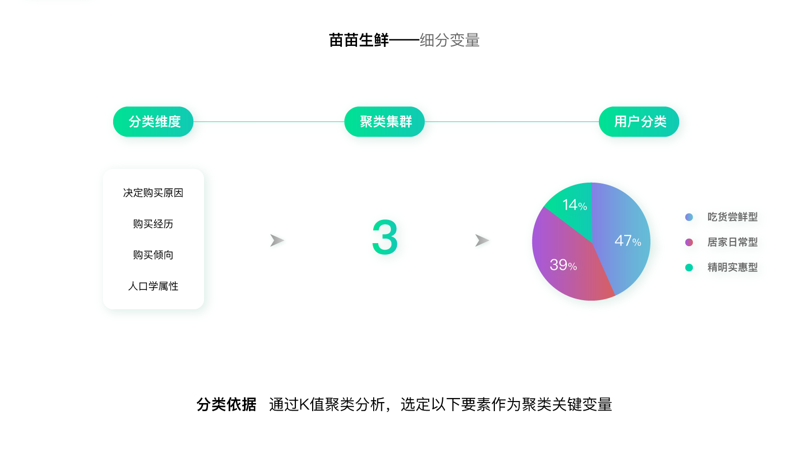
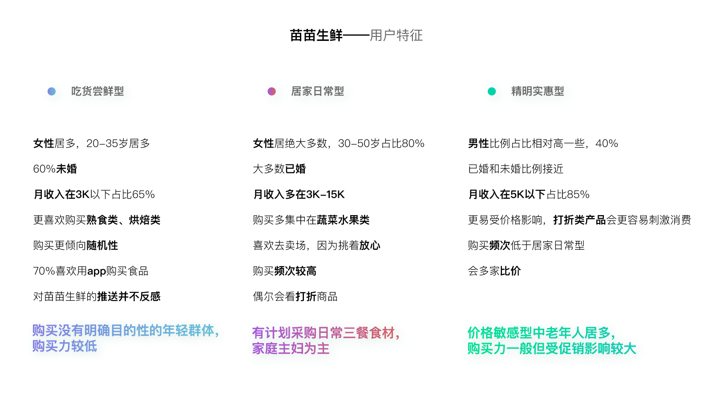
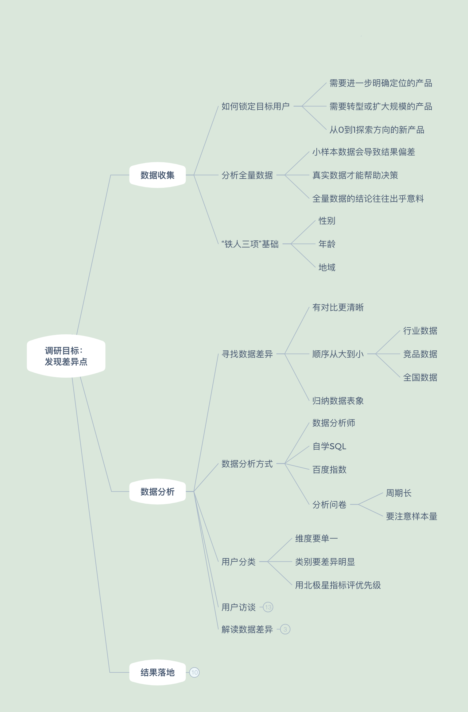
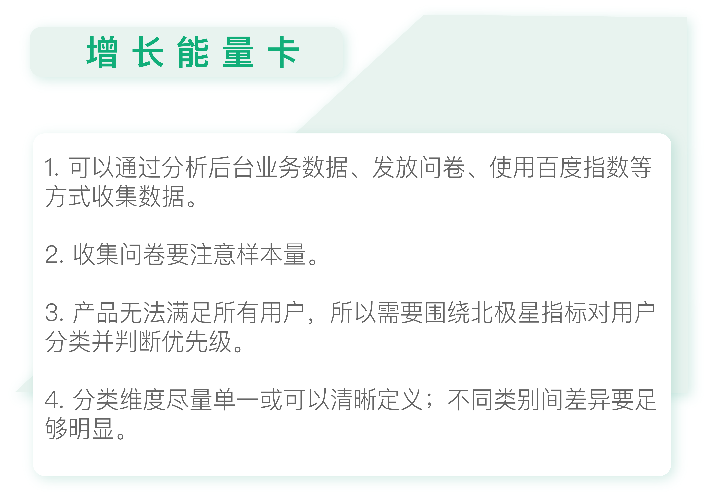

- 00 开篇词 人人都是增长官.md.html
- 01 预习 增长小白如何“弯道超车”？.md.html
- 02 预习 如何理解“增长”？.md.html
- 03 预习 不同职能如何做好增长？.md.html
- 04 预习 做增长如何处理职能间的矛盾？.md.html
- 05 正确目标找不对，天天加班也枉然.md.html
- 06 活学活用北极星指标.md.html
- 07 OKR如何助力增长？.md.html
- 08 不懂用户调研？那就对了！.md.html
- 09 调研目标：在差异性洞察中找到爆破点.md.html
- 10 数据分析：在“花式对比”中发现玄机.md.html
- 11 用户分类：围绕北极星指标细分人群.md.html
- 12 用户访谈：像侦探一样寻找破案线索（上）.md.html
- 13 用户访谈：像侦探一样寻找破案线索（下）.md.html
- 14 提炼用户差异，发现增长契机.md.html
- 15 挖掘产品优势，打破增长瓶颈.md.html
- 16 定位营销差异，抢占用户心智.md.html
- 17 一级方向：找到增长爆破点.md.html
- 18 B端产品如何调研？.md.html
- 19 全局规划增长机会.md.html
- 20 统筹全局的用户增长地图.md.html
- 21 案例解析：定义关键增长指标.md.html
- 22 正负双向洞察，找准切入点.md.html
- 23 二级机会：制定增长策略.md.html
- 24 为一家濒临破产的公司制定增长策略（上）.md.html
- 25 为一家濒临破产的公司制定增长策略（中）.md.html
- 26 为一家濒临破产的公司制定增长策略（下）.md.html
- 27 为什么指标数据怎么优化都不提升？.md.html
- 28 案例解析：打造增长闭环（上）.md.html
- 29 案例解析：打造增长闭环（下）.md.html
- 30 案例解析：唤醒沉睡用户（上）.md.html
- 31 案例解析：唤醒沉睡用户（下）.md.html
- 32 没有分解，就无缘增长.md.html
- 33 四个要点颠覆传统需求文档.md.html
- 34 三级落地：无限场景应用.md.html
- 35 手把手教你设计一次成功的实验（上）.md.html
- 36 手把手教你设计一次成功的实验（下）.md.html
- 37 积少可成多，别针换别墅.md.html
- 38 四级延续：增长组件库案例.md.html
- 39 以用户为中心增长.md.html
- 增长导航图 增长专栏的知识架构是怎样的？.md.html
- 尾声 结束意味着新的开始.md.html
- 预习答疑 你需要一张思维导图吗？.md.html
- 捐赠
11 用户分类：围绕北极星指标细分人群
你好，我是刘津。
今天我们来学习在数据分析的基础上细分人群，为进一步差异化洞察做好准备。
不过在开始之前，我们先回顾一下上次的内容。上一讲我们学习了数据分析的思路，但是具体该如何操作呢？
收集并分析数据实践
收集数据的方法有很多。
你可以找专业的数据分析师帮你跑一下后台业务数据，如果只分析“性别”“年龄”“地域”的话，由于字段不多，所以过程并不复杂。没有专业的数据分析师的话，你也可以自学SQL，并申请数据权限自己分析（模块五）。实在不行你还可以参考百度指数。
如果暂时不方便进行数据分析，你也可以通过发放问卷的方式收集用户信息。
问卷中除了收集用户性别、年龄、地域这三项基础信息之外，你可以根据产品属性，增加任何你认为有意义的信息，比如职业、受教育水平、从什么途径了解到产品等等。你还可以询问产品相关负责人，看看他们有什么想了解的信息，酌情加入到问卷里。
注意，问卷内容不要太多，最好控制在25个问题以内；尽量少问开放性问题，避免用户反感。在正式发放问卷之前，你最好先找几个人试填一下，确保不出现大的问题。
准备好问卷内容后，你需要通过问卷工具撰写内容并收集结果。
网上可以搜索到很多免费的问卷工具，之前我们用过腾讯问卷，感觉还不错，可以很方便地查看数据统计并进行交叉分析。当然你也可以去探索其它的问卷工具。
发放问卷可通过邮件、短信、PUSH、公众号图文消息、产品（比如首页、Banner等）。注意在整个过程中都需要和相关同事打好招呼，避免重复性工作并获得必要的支持。
发放问卷后就要等待回收了，这里需要提醒的是，收集问卷要特别注意样本量。
如果样本量不够，会严重影响结果的真实性。
你可以参考下图内容选取样本量。比如你的用户量是10万人，那么就需要收集1%的样本，也就是1000份左右问卷才有代表性。

使用问卷调查的弊端是周期较长，因为需要回收到足够的样本量才可以进行分析，需要等待至少一到两周的时间。
收集并分析完用户数据后，如上一讲提到的，我们还需要跟其它数据做对比。
全国的人口数据在网上都是可以查到的。竞品数据如果没办法直接拿到，我们可以通过搜索网络文章、百度指数、问卷调研等方式参考。在对比的过程中，我们就能够了解人群普遍的特征。
用户分类的意义及问题
接下来，我们还需要了解细分人群特征。
因为产品不可能满足所有人。前面我们一直提到，做增长要抓大放小，抓住主要矛盾，忽略次要矛盾，所以首先你要找到最重要的那个用户群体，在普遍特征的基础上进一步挖掘该目标群体的差异性。
要找到最重要的用户群体，首先我们需要把现有用户群体进行分类，再排定优先级。但是具体要怎么分类呢，该遵循什么标准呢？
传统的用户分类主要通过聚类分析，它是一种对多个样本进行数据分析的多元统计分析方法。听起来是不是特别绕？
简单一点说，就是通过专业的软件和方法，用若干分类维度把大量的用户数据分成不同的几类。
看起来很专业，但是就我以往的经验来看，无论是后台全量数据还是问卷信息的聚类分析，它们的效果都不好。因为涉及的分类维度过多，最后得出的分类往往不伦不类，难以清晰描述。

以上图为例，某生鲜产品（苗苗生鲜为化名）按照购买原因、购买经历、购买倾向、人口学属性等多种维度，把用户分成三类，分别称为“吃货尝鲜型”“居家日常型”“精明实惠型”三类。
接下来，传统用户分类还会再分别描述每类人群的主要特征。

这种方式确实可以帮助我们更加了解自己的用户，对用户有了更加感性的认识，但实际上却很难落地。
比如说，我该如何找到“吃货尝鲜型”，并有针对性地为他们做改进？用户又如何得知自己属于什么类别，以更好地接受我的服务？
正是因为分类的维度过多，导致每个类别都有一种四不像的感觉。类别之间的边界模糊，无法一针见血地突出该类用户的特质，自然就很难应用。
为此，我专门请教了几位专业的用户研究员和数据分析师，了解他们一直使用这种方法背后的原因。
首先，他们认为一定要够严谨，所以才会使用尽量多的维度来做分类，保证每种可能都考虑到。其次，他们并不负责落地。所以专业和严谨才是他们最看重的。
这让我想起多年前我刚开始做交互设计时也一直用“事无巨细”的要求提醒自己，保证每种可能性都要考虑到，这样才够专业。
的确，在我们刚从事一项工作时，注意专业、注意细节是非常重要的；但是当我们已经熟练掌握工作技能后，就需要改变角度，从追求执行转变为追求策略。
但是非常可惜的是，很多人意识不到需要做各种转变，以至于在职场中蹉跎多年，没有质的提升。
围绕北极星指标做分类
好了现在我们切回正题，既然传统的方式被证明是不实用的，那么应该如何做用户分类呢？我认为应该尽量满足三点：
- 单一维度或可以清晰定义的维度；
- 不同类别之间应具有明显的差异性；
- 和北极星指标相关并由此判断优先级。
实例1
对于宜人贷来说，北极星指标是“低成本高贷款余额”。
根据业务常识，我们可以按照“职业”这个维度把用户分为工薪族及小微企业主等几类人群。因为不同职业的人群有足够明显的差异。工薪族风险表现好，可以降低我们的成本；小微企业主风险表现略差，但是借款需求量大。
所以，从宜人贷的长期发展来看，工薪族的优先级应该更高。
实例2
我以前做过一款彩票产品，北极星指标是销量。而销量和用户量以及客单价有直接关联（客单价：平均交易金额）。从“客单价”这个维度出发，把用户分成低客单价的小白彩民和高客单价的专业彩民两类。
小白彩民的特点是偶尔只买一注2元的双色球，这类人群占比接近90%；专业彩民的特点是会在彩票上投入数万到数百万不等，占比10%左右。
这两类人群虽然数量悬殊，但对销量的贡献基本持平。所以两者都很重要，不分伯仲。
实例3
如果你的北极星指标是活跃度，那么你就可以根据活跃程度把用户分成若干类型。
当然，“活跃”的定义略为复杂，所以需要通过数据分析来做分层。
比如最近一次发帖、发帖频率、发帖数量这三个维度可以把用户分成不同层级的活跃类型，针对不同的活跃类型可以制定不同的运营策略。
注意，这和前面说的聚类分析里的“多个分类维度”是不一样的。因为聚类分析的多个分类维度之间关联度弱，而和活跃相关的多个维度之间关联度强。所以分类的结果也会更有针对性。
如果有兴趣的话可以在网上搜索“RFM模型”，道理是类似的。
实例4
我有个朋友是做网约车的，北极星指标是“低补贴下提升GMV（一段时间内的成交总额）”。他们的产品体量非常大，所以人群分类意义并不大。这就好像如果你想按活跃度对微信用户进行分类一样，你会发现很难有差异，因为人人都很活跃。
我们不妨再围绕北极星指标，想想GMV和什么关联最大？
GMV=订单数×客单价
提升订单数可以通过拉新、促活等，但需要较多的补贴，这和北极星指标不符合。再看看客单价，很明显网约车的客单价和场景有关，比如跨城、接送机场景的客单价明显比日常打车要贵很多。
这样分类就很明确了，最终可以按照“场景”这个维度分成“日常约车”和“商务出行”两类。
通过上述这几个例子，我想你已经明白，在做分类前需要先明确北极星指标，再考虑和北极星指标最相关的因素是什么，然后分类也就自然而然地出来了。
这么做的好处是不需要特别专业冗长的分析过程、业务针对性强、便于落地，并且也容易产生后续价值。
用户调研知识地图
根据今天的专栏内容，用户调研知识地图又添加了一些新支点。

在地图中列出的3级支点之下，还有更细致的东西。我希望你可以根据自己的认知、经验、感悟进行补充。

思考题
你认为应该如何根据北极星指标对你的用户群体进行分类并定义优先级呢？
欢迎把你的思考和疑问通过留言分享出来，与我和其他同学一起讨论。
如果你觉得有所收获，也欢迎把文章分享给你的朋友。
© 2019 - 2023 Liangliang Lee. Powered by gin and hexo-theme-book.